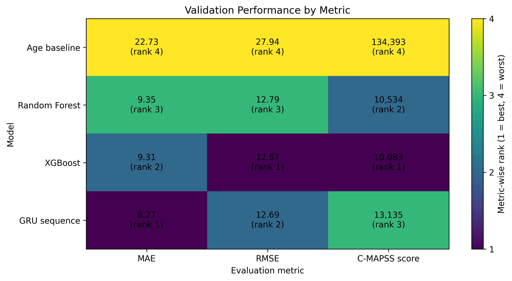

Predictive maintenance with NASA C-MAPSS
The challenge
Predict the remaining useful life (RUL) of simulated aircraft engines from multivariate sensor data, to support better maintenance decisions.
What I did
- Built a reproducible preprocessing and feature engineering pipeline with 30-cycle sliding windows and 102 statistical features.
- Compared an age-based baseline with Random Forest, XGBoost and a GRU neural network on the C-MAPSS FD001 dataset.
- Used SHAP to explain predictions and identify the most important sensors.
- Added conformal prediction to quantify predictive uncertainty.
- Simulated maintenance decisions based on the predicted RUL.
Results
XGBoost performed best.
10.10MAE, in cycles
13.41RMSE, in cycles
93%test coverage at a 90% target
